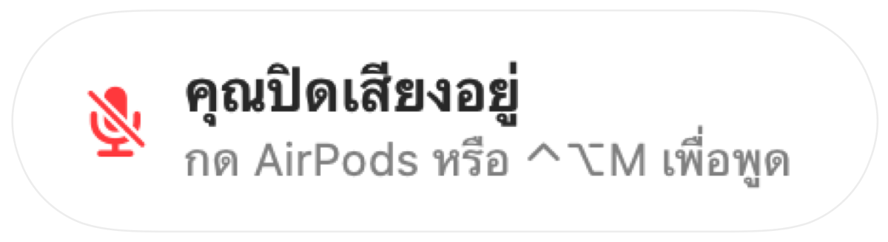

การแจ้งเตือน “คุณปิดเสียงอยู่” สำหรับทุกแอปการโทร
Zoom จะเตือนเมื่อคุณพูดขณะปิดเสียง แต่แอปส่วนใหญ่ไม่ทำแบบนั้น และการโทรผ่านเว็บแทบจะไม่เตือนเลย บางครั้งคุณอธิบายไปเป็นนาที แล้วเพิ่งรู้ตัวว่าทุกคนกำลังรอฟังอยู่
Muffle จะคอยตรวจจับเสียงพูดขณะที่คุณปิดเสียงและแสดงการแจ้งเตือนในทุกแอป เมื่อการโทรใช้ AirPods หรือชุดหูฟัง แอปจะฟังเสียงจากไมโครโฟนในตัวของ Mac เพื่อวัดระดับความดังเท่านั้น โดยไม่มีการบันทึกเสียงใดๆ
เปิดใช้งานการแจ้งเตือน
- 1
ติดตั้ง Muffle แล้วอนุญาตให้เข้าถึงไมโครโฟน
- 2
ตรวจสอบให้แน่ใจว่าเปิด “แจ้งเตือนเมื่อฉันพูดขณะปิดเสียง” อยู่ในการตั้งค่า Muffle
- 3
เข้าร่วมการโทรด้วย AirPods หรือชุดหูฟัง แล้วปิดเสียง
- 4
เริ่มพูด การแจ้งเตือน “คุณปิดเสียงอยู่” จะปรากฏขึ้น

- เข้าร่วมการโทรโดยที่ยังปิดเสียงค้างไว้จากการโทรครั้งก่อนใช่ไหม? Muffle จะแจ้งเตือนทันทีที่เริ่มการโทร
- เสียงพิมพ์จะไม่ทำให้เกิดการแจ้งเตือน ระบบจะตรวจจับเฉพาะเสียงพูดต่อเนื่องเท่านั้น
คำถามที่พบบ่อย
การแจ้งเตือนนี้ใช้งานได้กับไมโครโฟนในตัวของ Mac หรือไม่?
ระบบจะทำงานเมื่อการโทรใช้ AirPods หรือชุดหูฟัง หากการโทรนั้นใช้ไมโครโฟนในตัวของ Mac ไมโครโฟนตัวดังกล่าวจะถูกปิดเสียงอยู่จึงไม่สามารถตรวจจับเสียงคุณได้
มีการบันทึกเสียงของฉันหรือไม่?
ไม่มีการบันทึกเสียง Muffle ตรวจวัดเฉพาะระดับความดังเท่านั้น และจะไม่เก็บหรือส่งเสียงใดๆ ทั้งสิ้น